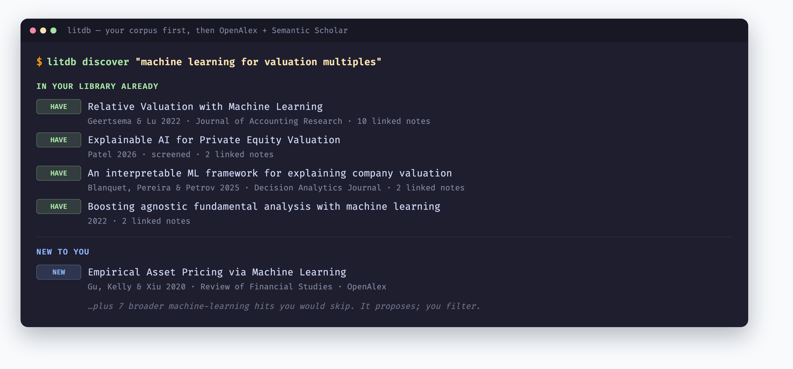
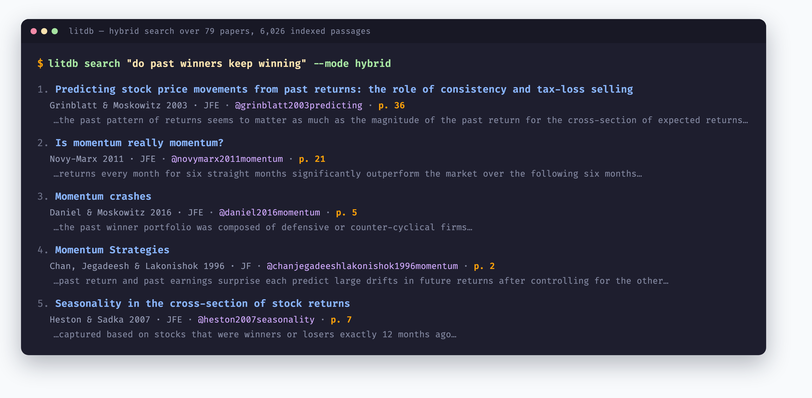
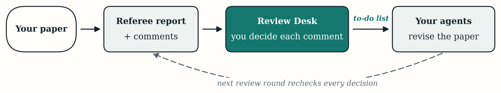
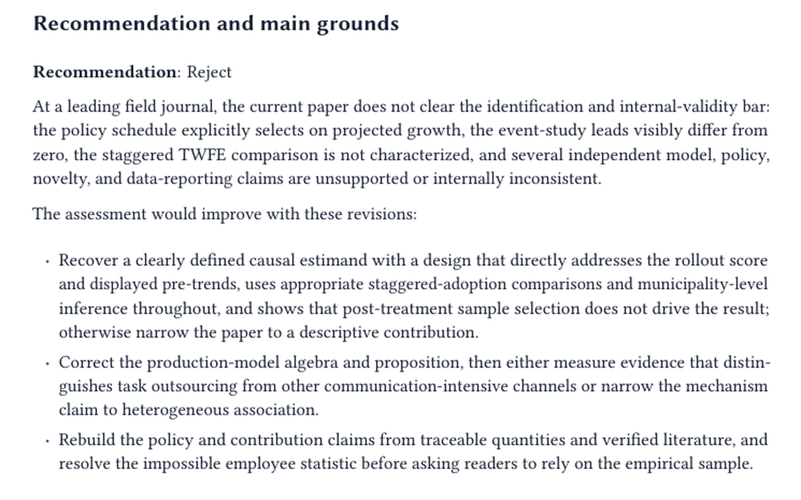
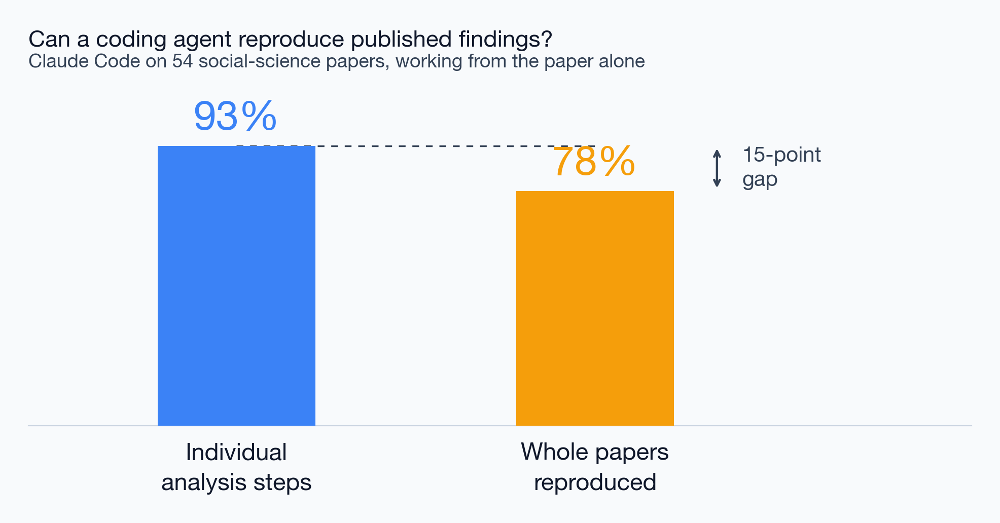

Rice Business 2026
Find
Organize
Write & review
Each move has a tool you can install today. AI does the search, the recall, and the first pass; the judgment stays yours.
Ask, don’t keyword
Follow the citations

It marks what I already hold before proposing anything new — and most of what it proposes, I skip.
79 Papers, 66 with full text
6,026 Indexed passages
3,812 Citation links
What it is
Why it helps
My actual numbers, from the litdb skill — plus 64 notes linked to the papers that prompted them. It runs locally; the library never leaves the machine.

No title contains a word from the query. Hybrid search matches the idea, and returns the page it came from.
Field-aware help
Sound human, not machine
The econ-write and human-write skills. They do not invent your findings — they help you say what you found, well.

You decide each comment
Accept, reject, or defer — the report proposes, you dispose
The loop closes
The next review round rechecks every decision you made

A real report on a real paper — a recommendation, and the grounds for it.
Issue
What is wrong, in one sentence
Relevant text
The passage in your draft it comes from
Concern
Why it threatens the paper’s claim
Suggestions
What would fix it, concretely
Twenty comments in this structure, each traceable back to a line in the draft — so you can argue with any one of them.
Pedro Sant’Anna
Lee Crawfurd
Installable, mostly built by economists — Claude as copilot, not pilot.
The biggest academic danger with AI is fabricated references and claims a cited source does not actually support. The better research skills attack this head-on.
Verify every citation
Checked against Semantic Scholar, OpenAlex, Crossref, arXiv — bogus DOIs caught before export
Audit every claim
Does the source actually support the sentence? High-severity violations block the output
Flag contamination
Detect citations that may themselves be AI-invented

Extraordinary at the parts
Not yet trusted end to end
The 93/78 split is the honest picture — and the reason you check the chain, not just the links.
AI handles the search, the recall, and the first pass — finding the literature, remembering what you read, drafting the prose, refereeing the draft. You decide what matters and whether it is right.